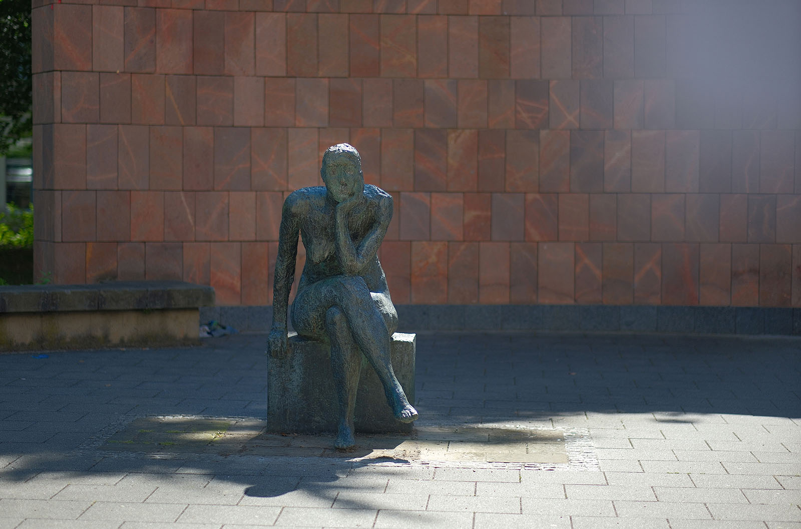
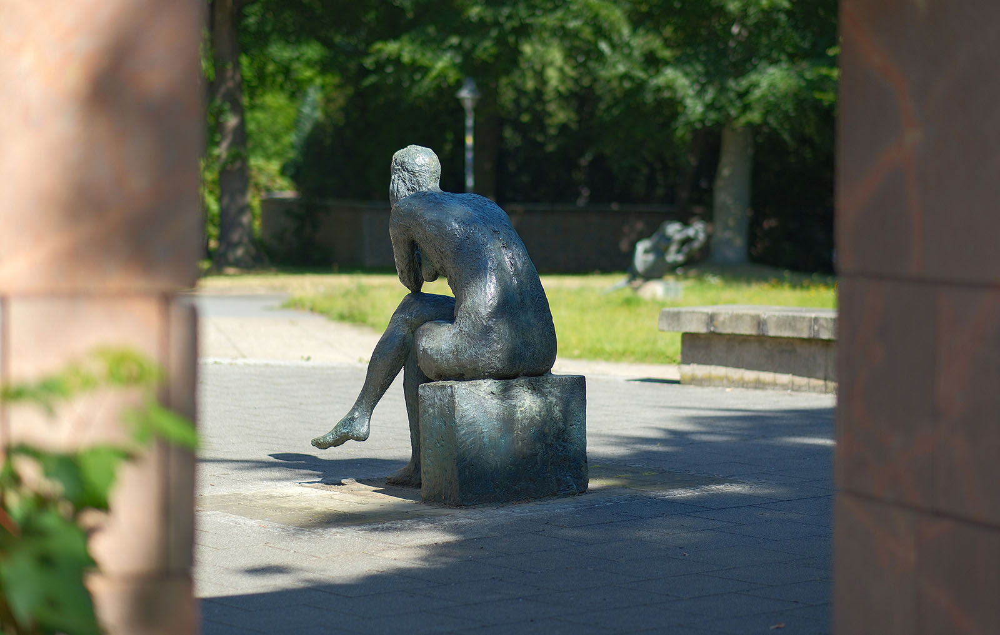
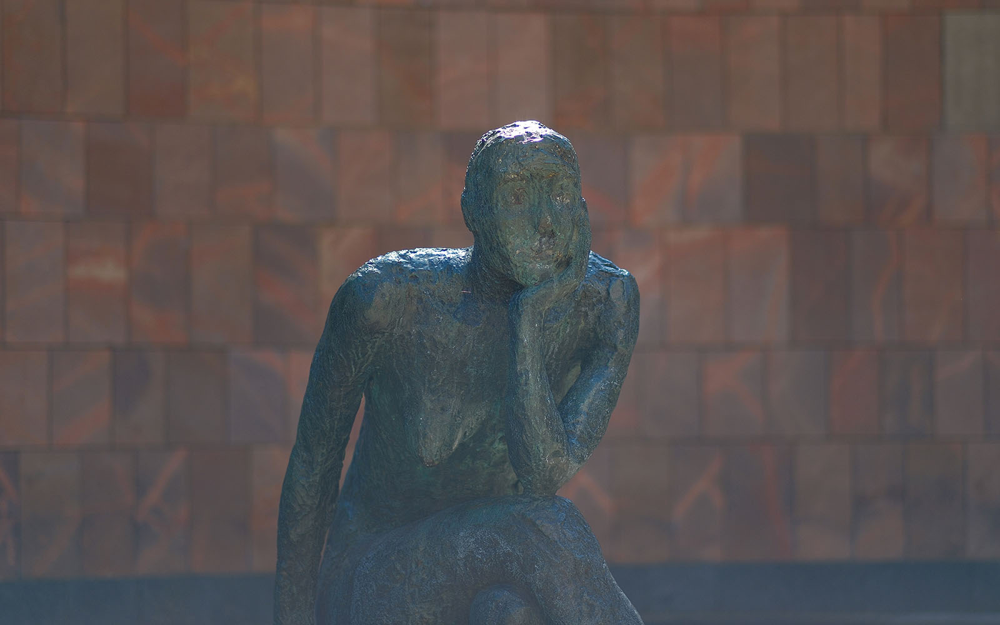
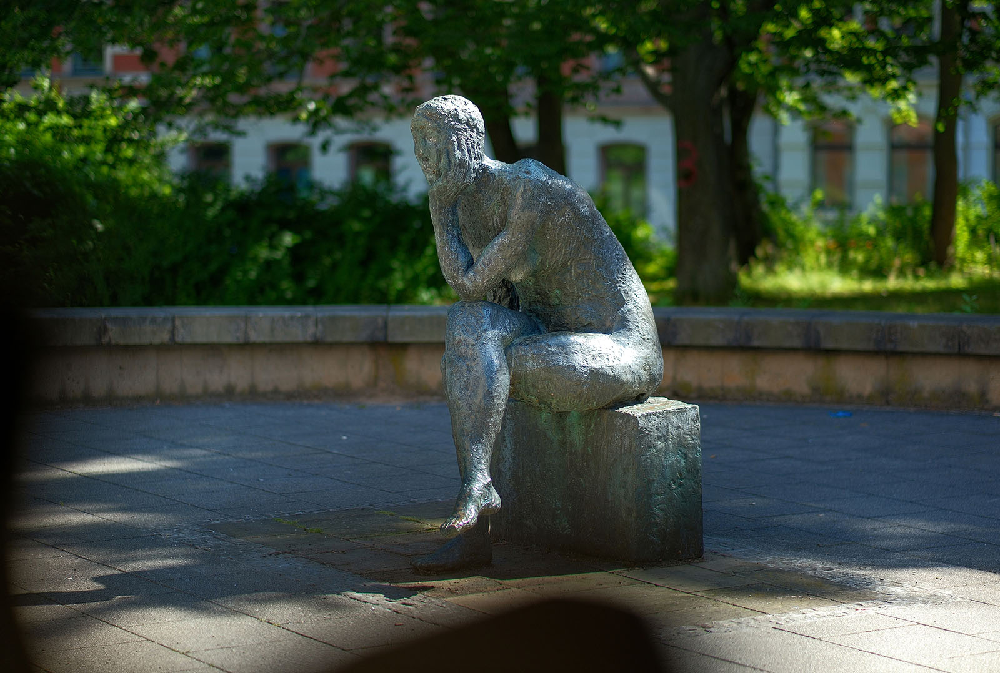

Recherche und Werkbeschreibung: Roman Pilz. Text und Fotografien wechseln sich wie in einem Magazin ab. Ein Klick auf ein Bild öffnet die Großansicht.
"Die Sinnende" war die erste große Auftragsarbeit der Berliner Bildhauerin Sabina Grzimek nach ihrem Abschluss als Meisterschülerin bei Fritz Cremer 1972. Bereits 1971 erhielt sie vom Demokratischen Frauenbund Deutschlands (DFD), einer politischen Massenorganisation der DDR, den Auftrag zur Ausgestaltung dieser lebensgroßen Plastik. Das 1969 formulierte Ziel des DFD bei seiner Auftragsvergabe war, vermittelt durch die Kunst, die "sozialistische Frauenpersönlichkeit, die kluge und selbstbewusste, gesellschaftlich aktiv tätige Frau, die schöpferisch das Leben unserer sozialistischen Gesellschaft im 3. Jahrzehnt der DDR beeinflusst" zu zeigen.
Grzimek ließ sich bei der Arbeit von dem bekannten Gedicht "Ich saz ûf eime steine", das um 1200 entstand, inspirieren. Als Teil der drei sogenannten Reichssprüche reflektiert der wohl berühmteste deutschsprachige Dichter des Mittelalters, Walther von der Vogelweide, darin über den Gang der Welt und die Schwierigkeit, wie als erstrebenswerte Güter zugleich Ehre und Besitz als auch göttlicher Segen erreicht werden können. Frieden und Recht scheinen ihm am Ende dafür die Grundvoraussetzung.
Weil denken traurig macht
Die Bronzeskulptur „Sinnende“ von Sabina Grzimek (1977), Schauspielhaus
Die markante "Denker-Pose" wird gleich zu Beginn des Gedichtes beschrieben: mit übergeschlagenen Beinen, aufgestütztem Arm und Wange in der Hand sinnt der Dichter als Beobachter und künstlerischer Interpret des Weltgeschehens schwer. Da auf große existenzielle, politische und philosophische Fragen im Allgemeinen naturgemäß keine leichten und schnellen Antworten zu finden sind, ist diese Pose auch eng mit dem Motiv der Melancholie verschränkt, so wie es beispielsweise durch den Stich von Dürer (Melencolia I, 1515) populär wurde.
Während allegorische Figuren wie bei Dürer relativ oft weiblich sind, ist das tiefgründige Nachdenken in der älteren Kunstgeschichte oft Männersache – von antiken griechischen Philosophen bis zum berühmten Bronzebild "Le Penseur" von Auguste Rodin ist das Denken Aufgabe großer Männer. Sabina Grzimeks "Sinnende" stellt sich bewusst in diese Tradition – weitet aber das Sujet sowohl für das weibliche Geschlecht als auch für das einfache, nackte Individuum an sich. Sie zeigt, dass das Nachdenken, zumindest da, wo die Existenz vom Kampf um das tägliche Brot weitestgehend befreit ist, eine eigentümlich menschliche Beschäftigung ist. Die Ergebnisse dieser Reflexion sind der Stoff, aus dem Kunst und Kultur entstehen, die wiederum zu neuem Denken anregen.
Die weibliche Aktfigur, die Grzimek zwischen 1972 und 1974 entwarf, zeigt, dass Anfang der 1970er Jahre, vor allem nach dem 6. ZK-Plenum, in der Kunst der DDR immer freier gearbeitet werden konnte. Nur im entfernten Sinn sehen wir hier also die "sozialistische Frauenpersönlichkeit", die der Auftraggeber ideologisch forderte und die in früheren Jahren teilweise holzschnittartig im Sozialistischen Realismus propagiert wurde: Frauen in Arbeitskleidung, als Mütter oder fröhliche Sieger des Klassenkampfes. Sabina Grizimek kreiert ein überlebensgroßes, zugleich verletzliches und widerständiges Werk, dem eine realistische Auffassung zugrunde liegt, dessen "Schönheit" aber buchstäblich von innen kommt.
Die Figur sitzt nackt und ungeschützt auf einem Quader, der nur scheinbar ebenmäßig geformt ist, hinten aber eine abgesetzte Bruchkante aufweist. Vor allem der Rücken der Frauenfigur "spricht" zu unserem Auge: Er ist stark gebeugt – entspannt, ohne Haltung, aber mit sichtbarem Rückgrat.

Die Glieder sind stark, die Schultern breit – sicherlich kein zierliches Mädchen, sondern eine durchschnittliche Frau, deren Körperlichkeit hier keine Aufmerksamkeit erregen will, da ihre "Arbeit" gerade im Geiste stattfindet. Die Brüste hängen, wie die Schwerkraft es erfordert, frei und ungezwungen, der Kopf dagegen wiegt schwer in der Hand. Das Haupt ist gerade durch seine eingeebneten Konturen und die Absage an klassische Schönheitsideale besonders markant. Da sind keine wallenden Haare, hohen Wangen oder vollen Lippen zu finden – nur die tiefen Augenkreise, die wie ein Sog ins dunkle Innere ziehen.
Die Bildhauerin abstrahiert hier vom realen Modell, sie lässt die Spuren ihres Modellierens im plastischen Material sichtbar: Kneten, Kratzen, Drücken und Glätten. Sie suchte die Formidee durch abstrahierende Verdichtung und Akzentuierung im Detail zu ermitteln.
Drei Exemplare des frühen Hauptwerks von Sabina Grzimek sind im öffentlichen Raum aufgestellt - in Berlin, Rostock und Chemnitz. Zunächst wurden einzelne Exemplare der wohl erstmals 1975 in Bronze gegossenen Plastik temporär auf verschiedenen Freiluftausstellungen gezeigt.
So kam "Die Sinnende" 1976 noch als Leihgabe zur Schau "Plastik im Freien" nach Karl-Marx-Stadt und war dort über den Sommer und Herbst im Stadthallenpark zu sehen. 1977, als die Planungen für die Gestaltungen des Außenbereichs des wiederzuerrichtenden Schauspielhauses begannen, wurde die Plastik dann von der Stadt erworben.

1980 fand sie ihren prominenten Aufstellungsort direkt gegenüber des Haupteingangs. Der ovale Vorplatz des Eingangs wird durch eine kleine Treppe vom Niveau des Parks abgehoben und im Hintergrund durch die markante, mit rotem Porphyrtuff verkleidete Wand begrenzt. Die Figur ist so ausgerichtet, dass sie sowohl kommenden als auch das Gebäude nach der Vorstellung verlassenden Gästen des Theaters in den Blick fällt. Auch durch den kleinen rechteckigen Durchbruch im Rund der abgesetzten Fassadenwand ergibt sich bei bestimmter Position eine reizvolle, das Kunstwerk rahmende Perspektive.
Man kann durchaus sagen, dass der nachdenklichen Figur in Chemnitz architektonisch und inhaltlich am besten entsprochen wird. Das Berliner Exemplar wurde vom Bundesvorstand des DFD der Humboldt-Universität geschenkt und sollte sicherlich das weibliche Element am Bildungs- und Hochschulort unterstreichen. Während aber auf der repräsentativen Vorderseite des Hauptgebäudes gleich vier Männer um Aufmerksamkeit kämpfen - Alexander und Wilhelm von Humboldt sowie Hermann von Helmholtz und Max Planck - bleibt der anonymen Sinnenden nur der intimere Hinterhof der Uni. Und in Rostock im Skulpturengarten an der Kunsthalle ist sie eine von vielen.
Nicht so in Chemnitz, wo ihr die Bühne vor dem Eingang fast alleine gehört – die Liebenden von Volker Beier oder "Die Kämpfenden" von Krepp stehen ausreichend auf Distanz oder können einfach nicht mit dem fast monumentalen Format der Bronze mithalten.

Weil denken traurig macht
Die Bronzeskulptur „Sinnende“ von Sabina Grzimek (1977), Schauspielhaus
